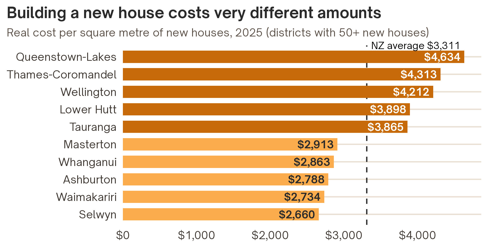
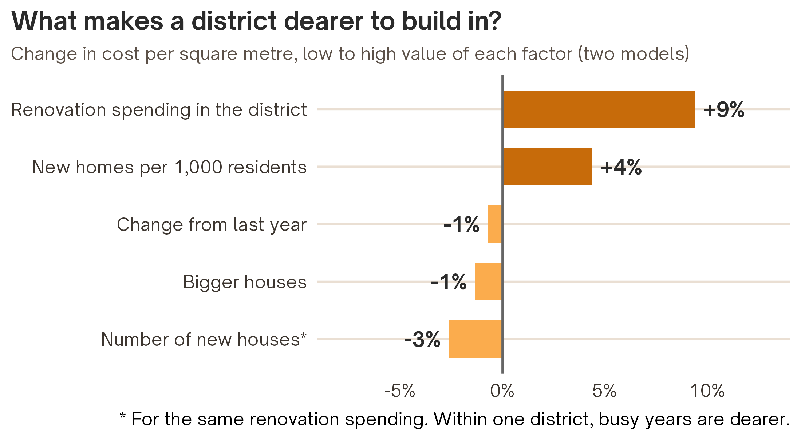
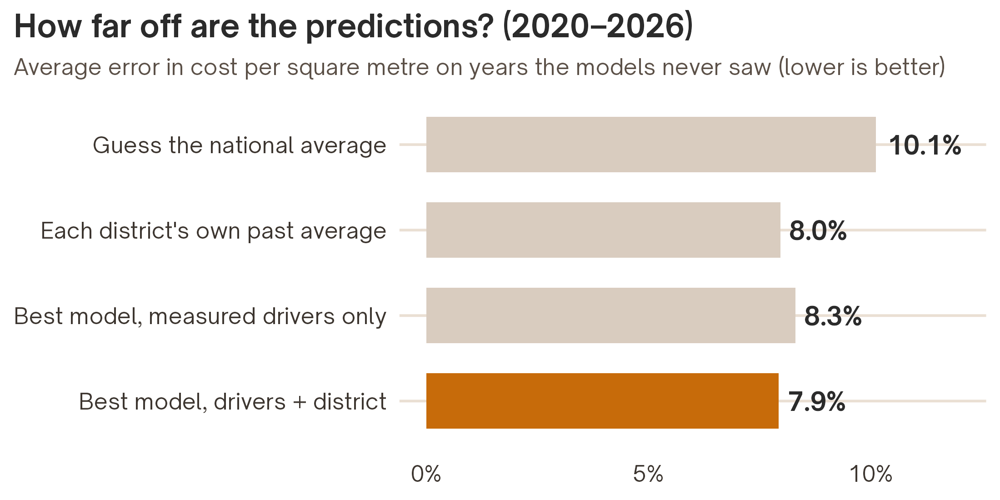
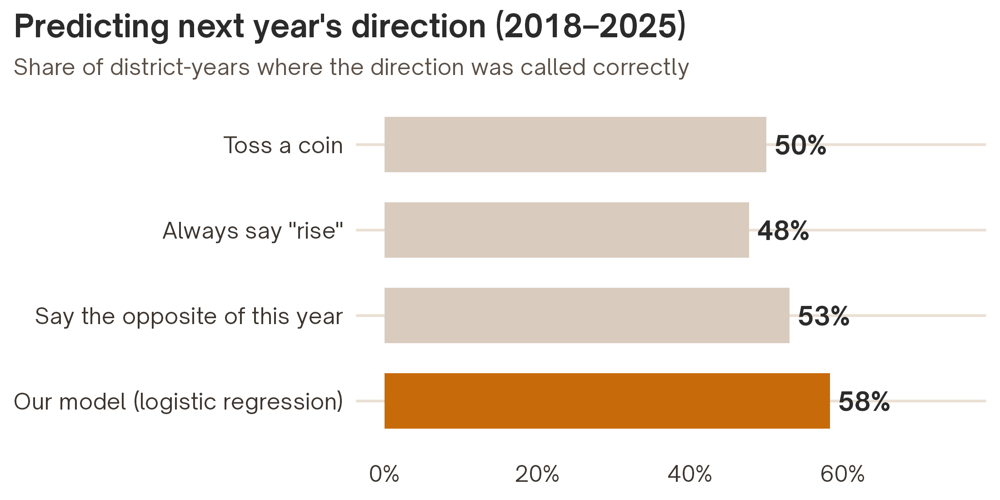

What New Zealand builds,
where, and at what cost
Background
Before anything is built, a council issues a building consent. Stats NZ records the number, value and floor area of every consent, by district and month, since 1990: what New Zealand builds, where, and at what cost.

Data
Preparation
- Reshaped to one row per district and quarter (RQ1) or year (RQ3)
- 2010 GST change removed; deflated to June-2026 dollars (Capital Goods Price Index)
- Quarters with under 5 new houses not modelled; no feature uses house value
Approach
Three questions, one per family of methods. Models are trained on earlier years and tested once on the most recent years they never saw. Settings are tuned by time-ordered cross-validation, and the simplest model within one standard error of the best is chosen.
| Question | Methods compared | Chosen |
|---|---|---|
| RQ1 regression district × quarter |
baselines, linear, polynomial, ridge, lasso, elastic net, GAM, regression tree, random forest, XGBoost, SVM | ridge (with district); random forest (without) |
| RQ2 clustering 66 districts |
k-means and hierarchical (4 linkages); k chosen by 5 criteria | k-means, k = 3 |
| RQ3 classification district × year |
baselines, logistic, lasso, LDA, QDA, classification tree, KNN, random forest | logistic regression |
Response: each district's cost relative to the rest of NZ in the same quarter, which removes the national price level. 11 models; train 1996–2019, test 2020–2026.
- Renovation spending: strongest driver (+8% to +11%), a sign of wealthy, busy markets
- Fast growth adds cost, mostly in the fastest-growing places
- More new houses: cheaper across districts (volume builders), dearer in a district's own busy years


66 districts, nine features (2016–2026): dwelling mix, homes per resident, growth, volatility, cost, house size, commercial share.
- House-building (30): commuter belts, lifestyle and retirement areas
- Slow provincial (21): little, volatile building; cheapest
- Urban medium-density (15): cities and Queenstown; dearest


1,914 district-years; 11 features known at year end, including national momentum. Train 1996–2016, test 2017–2024, tuned on AUC.
- Rises more likely when NZ builds above its 5-year average and ends the year strongly
- Lumpy apartment markets and districts above their own average tend to fall back
- LDA matches logistic regression; trees, KNN and forests add nothing


Conclusions
- Place and the national cycle dominate: measured features explain a modest part of cost differences, market types blur together, and next year's direction is hard to call.
- Hypotheses: H1 supported; H2 partly (three types, weakly separated); H3 weakly (national momentum helps, district momentum reverses).
- Simple models were enough: ridge and logistic regression matched XGBoost, SVM and forests on unseen years.
Limitations & future work
- Consented value is an estimate at consent time and excludes land
- Activity measures are totals, so partly measure size; per-resident versions need population data
- No land prices, interest rates or migration: the most promising additions
- Associations, not causes; relationships drifted after 2023
References
Stats NZ. (2026). Building consents issued: August 2026 [Data set]. CC BY 4.0. https://www.stats.govt.nz/information-releases/building-consents-issued-august-2026
Stats NZ. (2026). Business price indexes: June 2026 quarter [Data set]. CC BY 4.0.
James, G., Witten, D., Hastie, T., & Tibshirani, R. (2021). An introduction to statistical learning (2nd ed.). Springer.
Full references in the report.
AI use: Claude (Anthropic) helped write and debug R code and edit text; all analysis choices and results were reviewed by the group.